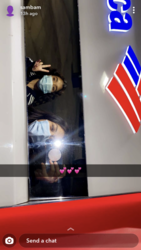
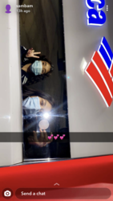
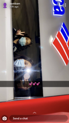

Frida Villasenor
Media Marketing
Hi my name is Frida Villasnor and I'm currently enrolled at the University of California, Riverside. My concentration is focused on Marketing because I have always been interested in the creative side of Business. I wanted a career that had creativity and flexibililty. My current experience with Business has to do on a much lesser level, for example, I have worked at a company at Mcdonald's and helped manage the store. I have also had some experience with working with different people at school to prepare me to work as a team. In school, I also did a project where my team and I created a product and had to present it, so I have experience working on projects. The reason I am creating this is because I want to further my experience to prepare me for the outside world where it is not confind to a classroom environment
Further more, I became so interested in business because I liked how versatile it was and the fact that you could take any focus you wonted to. It isn'y constricted ot one career and there is a lot of options you could choose from. i liked jow the pay was good and how I could work as a team with other peole, so that I wouldn't be isolated in the work force. I also feel that the job isn't constricted to a home office because there canbe times when you are needed on site.
Experience
Hostess
• Took orders from costumersX
• Handed out orders
• Cleaned the space of El Matador
cashier/runner
• Took orders and maintained the satisfication of costumers.
• Prepared the food to hand to costumers.
Reading assistant
• In reading Partners, I have my own student in which I work with every Monday for at least an hour
• We read books, do activities, and vocabulary
Education
University of California- Riverside
UC- Riverside
UC- Riverside
Portfolio

 

